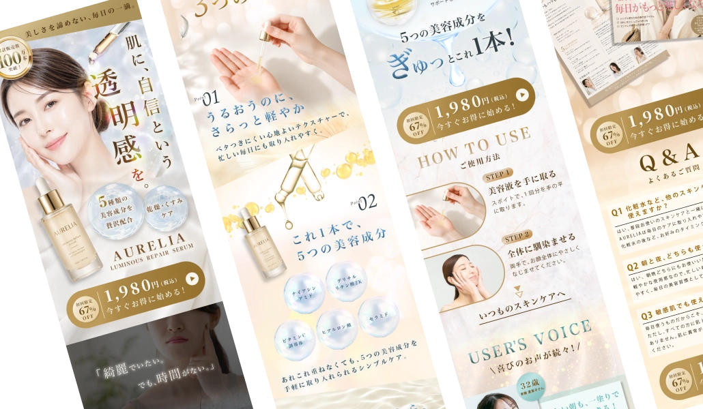
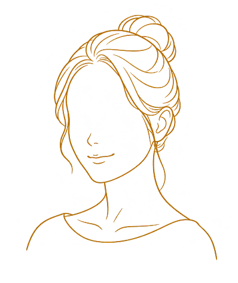
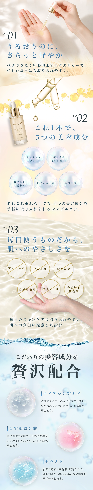
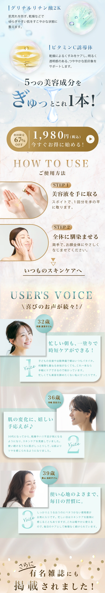
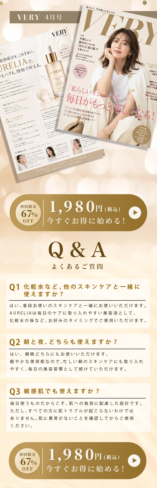

Process制作過程

01 | プロジェクト概要
AURELIAの特徴
仕事や子育てに忙しいけれど、美容には手を抜きたくない肌悩みを感じ始めた30代女性向け美容液。
1本に5種類の美容成分を配合し、軽い付け心地が特徴。
制作内容
架空商品「AURELIA」のLPデザインを制作。
仕事や子育てに忙しい女性に商品の魅力を伝え、日々のケアに取り入れるイメージを持ってもらい
商品の理解と初回購入に繋げることを目的としました。
02 | 目的・想定される課題
目的
商品の初回購入に繋げる。
想定される課題
- 時間のない中でもしっかりとケアができるのか。
- 忙しい毎日のケアに、どう取り入れられるかイメージしにくい。
- 美容成分の名前だけでは、自分の肌悩みに合う商品なのかが判断がしにくい。
03 | ターゲット
ペルソナ（想定）
- 【暮らし】
- 現在、夫（36歳）、長男（4歳）との3人暮らし。仕事はフルタイムでの勤務をしており、夫婦共働き。仕事と家事に追われ、自分のスキンケアにゆっくりと時間をかけにくい。最近、乾燥やハリ不足などの肌の変化が気になり始めた。
- 【求めること】
- 毎日のケアに無理なく取り入れられ、気になる肌悩みに合った美容液を選びたい。配合成分に加え、ベタつきにくい軽い付け心地を重視。成分の特徴や使い方を理解した上で上質なスキンケアを試してみたい。
- 【不安要素】
- 普段使用しているスキンケアより価格が高いため、商品を購入して失敗したくない。忙しい毎日の中での今のケアにどう取り入れられるのかが気になる。自分の肌に合うか、刺激を感じないか等の不安を感じる。

04 | 訴求内容
伝える商品の魅力
肌悩みが気になり始めても、スキンケアに手間をかけにくいという女性に向けて、1本に5つの美容成分が配合されていることを訴求。複数の成分を短時間で取り入れたいという希望に応える。さらに、軽い付け心地を伝えることで、成分だけではわからない使用感を補い、毎日のケアに取り入れるイメージを持ってもらう。
訴求方針
肌悩みの共感から入り、商品を自分ごととして捉えてもらう。
配合の特徴と付け心地を説明し、忙しい毎日にも取り入れやすい美容液だと感じてもらう。
05 | ユーザーフロー
ユーザーの検討段階に応じた心理や行動を想定し、興味喚起から商品理解・信頼形成を経て、初回購入へとつながる情報設計を行った。
- 01
セクションFVユーザー心理どんな美容液？
私の肌に合いそう？ユーザーの行動商品の概要を確認し、内容を読み進める。 - 02
セクションお悩みユーザー心理私もこの悩みがある。ユーザーの行動自分の肌悩みと照らし合わせる。
- 03
セクション選ばれる3つの理由/
配合美容成分の紹介ユーザー心理私の肌悩みに合う成分は？
使い心地はどう？ユーザーの行動成分の特徴や配合目的、使用感について確認する。 - 04
セクション使い方ユーザー心理時間のない中でも毎日使用できる？ユーザーの行動普段のケアに取り入れられるか考える。
- 05
セクションお客様の声/
メディア掲載紹介ユーザー心理実際に使用した人の感想は？信用できる？ユーザーの行動実際の声や掲載情報を判断材料として読む。 - 06
セクションQ&Aユーザー心理気になる点を確認して、納得してから購入したい。ユーザーの行動気になる疑問への回答を確認する。
CTAはページ内に複数配置し、納得したタイミングで購入へ進める構成に
06 | デザインのPOINT
① FV | 理想の肌と商品の特徴を伝える
目指したい肌のイメージと、商品の特徴をひと目で伝えることを意識した。
人物写真とキャッチコピーで関心を引き、商品ボトルの近くには配合成分やケアの対象をまとめた。
商品の特徴を透明感のある球体の中に記載することで、使用後のみずみずしさをイメージさせる。
.png?v=39ce755d96)
② 美容成分 | 成分の働きを、肌へのメリットと結びつけて伝える
美容液を手に取る写真と「さらっと軽やか」というコピーを組み合わせ、軽いつけ心地を視覚化。
美容成分の説明では、成分に詳しくない人にも伝わるよう、
「うるおいを与える」「乾燥によるくすみをケアする」などの身近な言葉で説明。ただの成分説明ではなく、ユーザーへのメリットと結びつけた表現に。
.png?v=cdc91df61e)
.png?v=15d35db5f5)
③ 購入CTA | 試すきっかけと購入への導線をつくる
初回限定の割引率と価格を大きく表示し、初めて購入する人が試してみようと思えるきっかけをつくった。
CTAはFV、成分説明後、メディア掲載紹介後、Q&A後の全4か所に配置し、納得したタイミングで購入へ進める構成に。
④ 配色 | 美容液の上質感とみずみずしい使用感を表現
商品ボトルに合わせたゴールドを基調に、上質感を表現。
ラグジュアリー感が強くならないよう、アイボリーでやわらかさを添え、美容成分を紹介する部分には淡いブルーを使用して美容液のみずみずしさを表現した。

Design完成図



